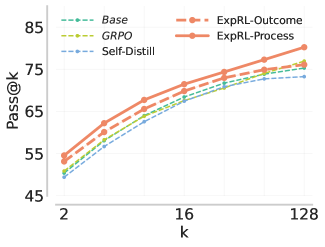
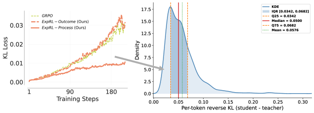
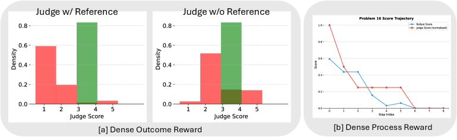

ExpRL：reference solution 不该拿来模仿，该拿来给探索打分
- Paper: ExpRL: Exploratory RL for LLM Mid-Training
- Code: violetxi/ExpRL
- Version: arXiv v1, 2026-06-15（cs.LG）
- 类型: RL mid-training / dense reward from references / RL priming for reasoning
- 关键词: reference-guided dense reward, ExpRL-Outcome, ExpRL-Process, pass@k as coverage, GRPO, REINFORCE, misplacement rate
读法：给人和 agent 的路标
这篇要抓住一个关键分离：reference solution 不暴露给 actor，actor 只看原始题目；reference 只给 LLM judge 用，用来判断 on-policy trace 有多少”朝正确解法前进”的信号。
只看 abstract 很容易误读成”有答案就 SFT”。作者要证明的恰好相反：对 hard reasoning，直接 imitation 会因为 off-policy mismatch 严重伤害模型（Table 2 里 SFT 把 pass@1 打到个位数），更好的方式是保留 on-policy 探索，把 reference 变成 dense reward 的脚手架。第二个容易漏掉的点：它的目标函数不是 Stage-I 分数，而是 pass@k coverage——为后续 sparse-reward RL 准备更多”可强化的成功路径”。
给 agent 之后检索，关键词是：ExpRL、reference-guided dense rewards、RL priming、pass@k as coverage、ExpRL-Outcome、ExpRL-Process、### delimiter segmentation、misplacement rate、wrong reference calibration、off-policy mismatch self-distillation。
一句话判断
ExpRL 把”人类写好的 step-by-step solution”从监督微调目标改成奖励脚手架：模型自己从原题采样，judge 对照 reference 给 1 到 5 分的 partial progress score，再用 RL 把概率质量推向有希望的推理路径。数学上它同时赢下 Stage-I coverage（AIME26 pass@1 从 51.45 提到 57.51）和 Stage-II 终局（AIME26 从 GRPO 的 58.75 提到 63.41）；而校准实验证明这个信号真的来自 reference——把 reference 换成错题的，judge 的 misplacement rate 从 17.8% 崩到 50.4%。
图表优先读法
| 先看 | 图/表 | 读完应该抓住什么 |
|---|---|---|
| 1 | Figure 1：ExpRL overview | reference 只参与 reward，不进 policy 上下文 |
| 2 | Table 1 / Table 2 | ExpRL 是更好的 Stage-II 初始化；SFT 在 Stage-I 是灾难 |
| 3 | Figure 3 + Figure 4 | ExpRL 不掉 entropy；self-distillation 的 teacher 在 KL 上够不着 |
| 4 | Figure 5 | 收益来自 verification、self-correction、backtracking 等行为变化 |
| 5 | Table 5 / 6 + Figure 11 | reward 是 reference verification，不是 generic judge confidence；coding 例外 |

自制图解：把 ExpRL 最容易误读的分离画出来——reference y* 只进 judge 的评分上下文（虚线），actor 从原题 on-policy 采样。judge 的 1-5 分沿两条粒度回流：Outcome 版整条 trace 一个分数走 GRPO-style batch 归一化，Process 版按 ### 切 prefix 逐段算 delta advantage 走 REINFORCE。Stage-I 攒下的 coverage 在右侧 Stage-II sparse-reward RL 里兑现。
核心图：reference 只参与评分，不参与生成

原图来自论文 Figure 1：hard problem 上 base model 几乎采不到正确轨迹，sparse 0/1 reward 没有梯度；ExpRL 用 reference 构造 problem-specific rubric 给 on-policy trace 打 dense 分，训完的模型作为后续 RL 的更强初始化。
三条路线的对比值得记住：
- 普通 sparse RL：hard problem 上采不到正确轨迹，0/1 reward 几乎不产生学习信号；
- SFT / self-distillation：reference 或 teacher trace 变成 token target，但这些轨迹可能离 student 当前分布太远；
- ExpRL：policy 从原题采样；reference hidden from policy，只给 judge 构造 rubric，输出 dense reward，强化 partial progress、有用的中间 reduction 和 productive reasoning behavior。
本质上这是在做 exploration prior：先让模型更可能采到 productive reasoning path，再拿去跑标准 sparse-reward RL。作者把 pass@k 当成 coverage 的 operational proxy——如果 policy 对某条可成功路径分配了非零概率，重复采样就能命中；pass@k 提升说明覆盖了更多路径，而不只是 pass@1 上”更自信”。
方法机制
输入与目标
数据是 D_mid = {(x_i, y*_i)}：hard question 配人类写的 step-by-step reference solution（来自 InT 和 POPE 两个近期数据集的混合）。目标不是 Stage-I 立刻满分，而是让 base policy pi_b 在进入 binary-reward RL 之前，对 productive reasoning paths 有更广的 coverage。整体目标函数是 dense reward 期望减去对初始 policy pi_0 的 KL 正则（Equation 3）。
ExpRL-Outcome：整条 trace 一个分数
judge 拿到 (x, y, y*)，输出 1 到 5 的整数分，归一化：
s(x, y, y*) = (s~ - 1) / 4 ∈ [0, 1]
评分对象不是 final answer 对不对，而是 trace 与 reference 中技术和高层策略的对齐程度。judge 被明确要求 verify rather than solve：不许替模型补步骤、填中间结果、修错误；trace 里没直接支撑的项一律记 absent。优化用 GRPO-style update，在 batch 内归一化分数，上侧 clip 阈值 0.28（sparse GRPO 对照是 0.26）。
ExpRL-Process：按 ### 切段的 delta reward
Process 版把 rollout 按 ### 分隔符切成 prefix，judge 对每个 prefix y_{<=t} 打分得到 s_t，segment advantage 是相邻分差：
A_t = s_t - s_(t-1) (t > 1)
A_1 = s_1 - s_T (首段用末段分数居中，保证量纲一致)
只有让 reference alignment 变好的 segment 才拿正 advantage——”中途做对了 case split”或”验证了关键中间结论”变成局部学习信号，不用等 final answer。更新走 REINFORCE-style token/segment advantage，不做 group normalization。选 ### 是实用主义：Qwen3-4B-Instruct 默认就用它分步，约 98.3% 的 base rollout 至少含一个（Figure 6）。附录还试了 EndNorm / DeltaNorm / GroupNorm 三种居中方案（Equations 4-6），Stage-I pass@k 曲线基本一致，说明对居中方式不敏感。
两阶段设置
| 阶段 | 做什么 | 具体设置 |
|---|---|---|
| Stage-I | ExpRL mid-training | Qwen3-4B-Instruct-2507 兼任 policy 和 judge；G=10 rollouts/prompt，temperature 0.8，max 16,384 tokens；230 steps；batch 36（judge 版）/ 32（sparse） |
| Stage-II | 下游 sparse-reward RL | 同一 InT+POPE prompt 分布，去掉 reference，GRPO + binary final-answer reward，500 steps |
超出 token budget 的轨迹整条 reward 记 0，防止 degenerate 的凑长度行为。对照方法：SFT（直接拟合 reference）、sparse-reward GRPO、self-distillation（拿自己采到的正确轨迹当 target）。
关键结果 1：作为 RL 初始化更强（Table 1）
Table 1 比较 Stage-II sparse RL 之后的 pass@1——也就是”这个 priming 方法是否让后续 RL 更好”：
| Method | AIME25 | AIME26 | HMMT | IMO Answer |
|---|---|---|---|---|
| Qwen3-4B-Instruct（base） | 46.46 | 51.40 | 40.60 | 31.37 |
| SFT | 26.62 | 30.26 | 20.09 | 21.80 |
| GRPO | 55.99 | 58.75 | 42.91 | 35.28 |
| Self-Distillation | 55.59 | 58.41 | 46.08 | 35.18 |
| ExpRL-Outcome | 59.07 | 61.74 | 49.11 | 37.85 |
| ExpRL-Process | 58.08 | 63.41 | 48.13 | 35.73 |
三个读表要点：
- ExpRL 两个变体在四个 benchmark 全部领先；AIME26 上 ExpRL-Process 比 GRPO 高 4.66pp，HMMT 上 ExpRL-Outcome 高 6.20pp。
- SFT priming 之后连 RL 都救不回来：26.62 甚至远低于 base 的 46.46。off-policy imitation 造成的伤害是持久的。
- Self-Distillation 在 HMMT 上（46.08）其实不差，但整体仍输给两个 ExpRL 变体——差距的机制在 Figure 4（下文）。
evaluation 是 HMMT（2025 年 11 月）、IMO-AnswerBench、AIME 2025/2026，每题采 128 个样本。
关键结果 2：Stage-I 已经买到 coverage（Table 2 + Figure 2）
Table 2 看 Stage-I 后、Stage-II 前的 pass@1 / pass@16：
| Method | AIME25 p@1 / p@16 | AIME26 p@1 / p@16 | HMMT p@1 / p@16 | IMO p@1 / p@16 |
|---|---|---|---|---|
| base | 46.46 / 72.32 | 51.45 / 80.30 | 40.60 / 68.43 | 31.37 / 52.74 |
| SFT | 6.00 / 30.95 | 5.68 / 34.24 | 3.41 / 23.91 | 4.22 / 31.07 |
| GRPO | 48.67 / 76.37 | 51.39 / 77.55 | 41.68 / 67.58 | 34.35 / 54.58 |
| Self-Distillation | 42.98 / 71.39 | 53.91 / 78.32 | 39.89 / 67.44 | 30.46 / 52.62 |
| ExpRL-Outcome | 50.52 / 77.25 | 57.45 / 81.04 | 44.19 / 69.84 | 33.56 / 55.73 |
| ExpRL-Process | 51.77 / 74.29 | 57.51 / 81.10 | 45.24 / 71.48 | 32.02 / 54.29 |

原图来自论文 Figure 2：HMMT-Nov-2025 上 128 samples 的 pass@k 曲线。ExpRL 变体在低 k 就显著超过 base，ExpRL-Process 到高 k 仍保持优势——这是”coverage 变宽”而非”单点变自信”的直接证据。
最刺眼的一行是 SFT：直接拟合人类 reference 把 AIME25 pass@1 从 46.46 砸到 6.00，pass@16 也腰斩。这不是训崩了，而是 off-policy mismatch 的教科书案例——reference 的行文分布离 student 太远，强行拟合摧毁了模型自己的解题分布。ExpRL 用同一批 reference，换一种用法，方向完全反转。
为什么 self-distillation 也不够：teacher 在 KL 上够不着

原图来自论文 Figure 4：左图是 Stage-I 训练中 policy 对 reference policy 的 KL；右图是 self-distillation 开始时 student 对 teacher 的逐题 KL。teacher 远在 on-policy reward optimization 可达的 KL ball 之外。
这张图回答了”self-distillation 明明也用自己的正确轨迹，为什么还是输”：蒸馏目标从一开始就是 substantially off-policy 的，强迫 learner 匹配一个 KL 上很远的 expert 分布会带来 distribution shift 和不稳定优化；而 ExpRL 全程待在 base policy 可达的 KL 邻域内改善 coverage。这给”on-policy + dense reward 优于 off-policy imitation”补了机制层面的证据，而不只是 benchmark 分数。
训练动态：不是 mode-seeking 式收缩

原图来自论文 Figure 3：左——unsolvable prompts 数量，ExpRL-Process 下降最快；中——token-level entropy，ExpRL 保持稳定甚至微升，sparse GRPO 明显收缩；右——response length，ExpRL-Process 先涨后被 length clipping 压回。
- sparse GRPO 的 entropy 掉得最快，更像在快速收缩到已知模式（mode-seeking）；
- ExpRL 的 entropy 稳定甚至略升，同时 unsolvable prompts 解锁更快——”探索没死，覆盖在涨”同时成立；
- ExpRL-Process 有 response length 膨胀的副作用，靠超预算轨迹记零分的 clipping 规则压回来。这是 process reward 和长度激励相互作用的信号，部署时要盯。
行为层面：模型学到的是搜索行为，不是答案

原图来自论文 Figure 5：橙色是 priming 后新增的行为，蓝色是丢失的行为，红字是净变化。ExpRL 在 verification、self-correction、backtracking 等 search-oriented behaviors 上取得净增益。
方法论值得借鉴：把 Stage-I rollout 全文发给外部标注模型 Claude Sonnet 4，按固定 rubric 输出结构化 JSON——一边是 solution archetypes（coordinatization、casework、recursion、contradiction 等高层策略），一边是 reasoning behaviors（verification、self-correction、exploration、restart、backtracking 等过程现象），再逐题聚合和 base 比较净变化。结论：ExpRL 改变的是采样轨迹的分布，尤其是 verification、self-correction、backtracking 这些”搜索型”行为的覆盖，而不只是 final correctness。

原图来自论文 Figure 10：Stage-I priming 后在四个 held-out answer-based benchmark 上的 pass@k。最清晰的增益出现在低到中等 k——模型不是靠无限采样撞答案，而是在更少尝试内覆盖到能走通的方向。
Mixed-domain：能出 math，但 coding 是明确边界
8B 实验把 policy 换成 Qwen3-8B，judge 用更小的 Qwen3-4B-Instruct，Stage-I 数据 4,001 条（Table 3）：InT 440 + POPE 1,076（math，37.89%）、SciKnow-Physics 474 + SciKnow-All 1,000（science，36.84%）、LiveCodeBench v6 1,011（coding，25.27%）。270 steps 后（Table 4）：
| Method | Math-Agg p@1 | Math-Agg p@16 | STEM-Agg p@1 | STEM-Agg p@16 | LCB p@1 | LCB p@4 |
|---|---|---|---|---|---|---|
| Qwen3-8B（base） | 15.36 | 41.80 | 41.75 | 76.44 | 36.52 | 43.76 |
| GRPO | 24.93 | 52.61 | 46.88 | 76.30 | 54.97 | 64.09 |
| SFT | 4.84 | 26.99 | 27.11 | 70.11 | 25.66 | 38.28 |
| Self-Distillation | 17.38 | 43.96 | 42.71 | 76.57 | 43.02 | 56.51 |
| ExpRL-Outcome | 30.95 | 53.84 | 48.86 | 76.99 | 41.92 | 48.82 |
两面都要看：ExpRL-Outcome 在每一个 pass@1 指标上都改善 base，Math-Aggregate 和 STEM-Aggregate 的 p@1/p@16 都是最强 Stage-I 方法——reference-guided priming 学到的不只是 math 模板。但 LiveCodeBench 上 sparse GRPO 大幅更强（54.97 vs 41.92）。论文的解释站得住：不完整的代码可能根本编译不过，partial-progress credit 天然难打；而且功能等价的正确实现可以和 reference 长得完全不同，judge 实际依赖的是从代码和题面推断的 functional correctness，不是 reference 脚手架——有执行器的域，直接用 execution-based reward 更好。
Judge calibration：证明 reward 真的来自 reference
这是全文我最看重的实验。固定同一批 rollout，交叉变化 judge 尺寸（0.6B/4B/8B/14B）和 reference 条件（正确 / 无 / 错题的），度量 misplacement rate = (FPR + FNR) / 2——错误 rollout 得分 >3 算 false positive，正确 rollout 得分 <4 算 false negative，越低越好。Table 5（Math 列）：
| Judge | correct ref | no ref | wrong ref |
|---|---|---|---|
| Qwen3-0.6B | 48.6 | 48.5 | 47.5 |
| Qwen3-4B | 17.8 | 39.2 | 50.4 |
| Qwen3-8B | 18.8 | 36.0 | 52.6 |
| Qwen3-14B | 18.2 | 38.5 | 50.2 |
三个结论：(1) 4B 以上 judge 配正确 reference，misplacement 大约减半（SciKnow 两列同趋势，最好到 9.8%）；(2) wrong reference 比 no reference 更糟——judge 真的在对照 reference 验证，reference 必须 problem-matched，喂错了是负资产；(3) 0.6B judge 三种条件都在 48% 上下随机——judge 需要底线能力，但 4B 就够了，8B/14B 没有质变。这就是”8B policy 配 4B judge 也能训”的依据：reference-conditioned verification 让小 judge 能给大 policy 打可靠的 dense reward。
而 LiveCodeBench（Table 6，4B judge）：correct 9.7 / no-ref 8.2 / wrong 10.0——三者几乎无差，no-reference 甚至最好。这从校准侧独立印证了上一节的结论：coding 的 reward 信号根本不来自 reference。

原图来自论文 Figure 11：RL priming 集上的 judge 分数分布，红色是 final answer 错误的 rollout，绿色是正确的。有正确 reference 时两个分布被明显拉开，这是 dense reward 可用的前提。
Novel 还是 incremental？
拆开看，单个组件都不新：LLM-as-judge、process reward、GRPO、mid-training priming 全是既有件。真正的增量有三个：(1) 把 reference 的角色从 imitation target 翻转成 judge-only scaffold，并用 wrong-reference 对照证明信号确实来自 reference 而非 judge 先验——这个校准设计是全文最扎实的贡献；(2) 把 mid-training 的成功标准定义为 pass@k coverage 和 Stage-II 终局，而不是 Stage-I 分数，评估框架比方法本身更值得抄；(3) Figure 4 用 KL 距离给”为什么 off-policy 蒸馏更难优化”补了机制证据。相对地，ExpRL-Process 的 ### 切分是绑定 Qwen 输出习惯的工程启发式，算不上方法贡献。
我怎么判断
可信之处
- 目标定义诚实：明确说是 priming downstream RL，不把 Stage-I 分数包装成最终能力。
- pass@k 视角贯穿：coverage 论证有 Table 2、Figure 2、Figure 10 三层证据，不是单看 pass@1。
- 校准实验设计好：wrong-reference 条件能排除”generic judge confidence”这个最大的替代解释；judge 尺寸扫了四档。
- 主动报告负结果：coding 域 GRPO 更强、SFT 灾难、Process 的长度膨胀都写在正文，且都给了机制解释。
需要警惕
- reference 质量是硬依赖：作者自己承认这是首要 limitation——”reference solutions may not always be available, especially in domains where good references are hard to obtain”。而且 wrong-reference 崩到 50% 说明数据配错题的代价是灾难性的。
- misplacement rate 的阈值是拍的：>3 算 FP、<4 算 FN 的切点没有敏感性分析；judge 分布整体偏移时这个指标会失真。
- judge 与 policy 同家族：主实验里 policy 和 judge 都是 Qwen3-4B-Instruct，同族偏好（比如都爱
###分步、相似的解题风格）可能被系统性强化，policy 会学到 judge 的 bias。 ###切分绑定模型习惯：98.3% 覆盖率是 Qwen3-4B 的性质，换 tokenizer/格式习惯不同的模型要重新设计 segmentation。- Stage-II 是同分布的：下游 RL 用的还是 InT+POPE prompts，priming 收益对完全不同 prompt 分布的迁移没有单独验证（held-out 只测了 evaluation benchmark）。
- 行为分析依赖单一外部标注器：Claude Sonnet 4 一个 annotator、无人工校验的 JSON 标注，Figure 5 的行为结论应当看趋势不抠数值。
对我的价值
最大的可迁移观念：不要急着把好答案做成 imitation target。目标如果是让模型（或 agent）学会探索，好答案更适合变成评估 rubric：
reference note / expert solution
-> judge rubric（verify, not solve）
-> score agent's own on-policy attempt
-> reward partial progress, not surface imitation
-> 用 wrong-reference 对照检验 reward 真的来自 reference
三条具体 checklist：(1) 任何 LLM-judge reward 系统，都应该做 wrong-reference / no-reference 消融——这是区分”真验证”和”judge 先验”的最便宜的实验；(2) 有执行器的域（代码、可运行 agent 任务）优先 execution reward，reference scaffold 留给 proof-style 推理；(3) 评估 mid-training/priming 干预时看 pass@k 和下游 RL 终局，只看 pass@1 会把”收缩”误判成”进步”。这和 OpenThoughts-Agent 的 teacher finding 也连得上：teacher trace 是否适合拿来学，不取决于它对不对，而取决于它离 student 可达分布（KL ball）有多远——Figure 4 给了这个直觉一个可度量的形式。
一句话收束
ExpRL 把 reference solution 的角色从”标准答案”改成”探索的评分脚手架”，并用一组便宜的 wrong-reference 对照证明了这个脚手架真的在承重——方法是组合式的，但校准实验和 pass@k 评估框架值得原样抄走。